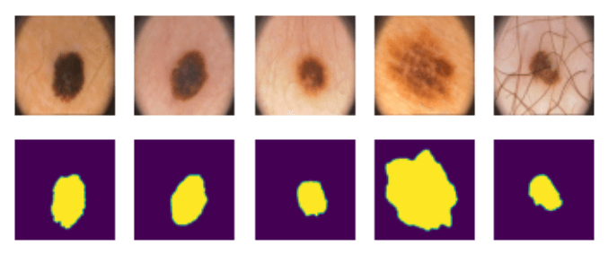

分割
我们之前学习了物体检测，它允许我们通过预测其边界框来定位图像中的物体。然而，对于某些任务，我们不仅需要边界框，还需要更精确的物体定位。这项任务被称为分割。
讲前测验
分割可以看作是像素分类，即对于图像的每个像素，我们必须预测其类别（背景是其中一个类别）。主要有两种分割算法：
- 语义分割 只告诉像素的类别，不能区分同一类别的不同物体
- 实例分割 将类别分成不同的实例。
对于实例分割，这些绵羊是不同的物体，但对于语义分割，所有绵羊都代表一个类别。

图片来自这篇博客
有多种神经结构用于分割，但它们都具有相同的结构。在某种程度上，它类似于你之前学习过的自动编码器，但我们的目标不是解构原始图像，而是解构掩码。因此，分割网络具有以下部分：
- 编码器 从输入图像中提取特征
- 解码器 将这些特征转换为具有相同大小和相应类别数量的掩码图像。

图片来自这篇出版物
我们尤其要提到用于分割的损失函数。在使用经典自动编码器时，我们需要测量两幅图像之间的相似性，并可以使用均方误差(MSE)来做到这一点。在分割中，目标掩码图像中的每个像素表示类号（沿第三维度单热编码），因此我们需要使用特定于分类的损失函数 - 平均于所有像素的交叉熵损失。如果掩码是二进制的，则使用 二元交叉熵损失（BCE）。
✅ 单热编码是一种将类别标签编码成长度等于类别数的向量的方法。参见本文了解这种技术。
医学图像分割
在这节课中，我们将通过训练网络识别医学图像中的人类痣（也称为痣）来看到分割的实际应用。我们将使用来自PH2数据库的皮肤镜图像作为图像来源。该数据集包含典型痣、不典型痣和黑色素瘤的200张图像。所有图像还包含一个对应的掩码， outlining 痣。
✅ 这种技术特别适合这种类型的医学成像，但你还可以想象它有哪些其他的实际应用？

图片来自 PH2 数据库
我们将训练一个模型来将痣从其背景中分割出来。
✍️ 练习：语义分割
打开下面的笔记本，以了解更多关于不同的语义分割架构，练习使用它们，并观看它们的实际效果。
课后测验
结论
分割是一种非常强大的图像分类技术，超越了边界框，实现到像素级别的分类。它在医学成像等应用中的应用非常广泛。
🚀 挑战
人体分割只是我们可以使用人物图像进行的常见任务之一。另一个重要的任务包括骨架检测和姿态检测。试试OpenPose库，看看姿态检测如何使用。
复习与自学
这篇维基百科文章对这种技术的各种应用提供了很好的概述。自己更多地了解一下实例分割和全景分割的细分领域。
作业
在这个实验中，尝试使用 Kaggle 上的Segmentation Full Body MADS 数据集进行人体分割。